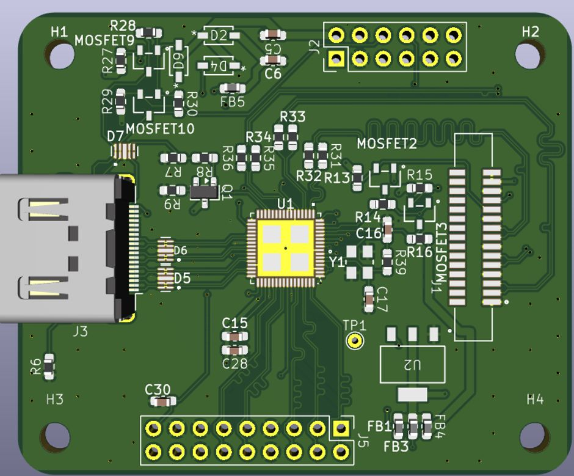
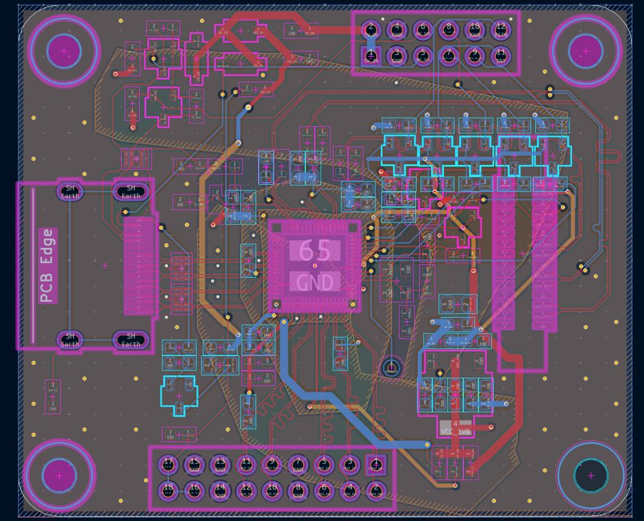
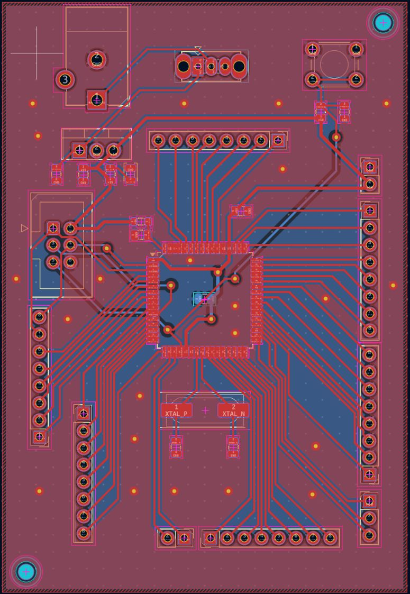

The boards
- ESP32-P4 MIPI-DSI to HDMI / LVDS bridge. The main exercise: a compact 4-layer board (60 × 50 mm) that converts the ESP32-P4's display output for HDMI and LVDS panels. The goal was to learn and apply best practice for high-frequency signals.
- ATmega128 development board. A minimum-system board with power input, USB-to-serial, crystal and broken-out I/O, focused on clean decoupling and placement.



What I practised
- A step-by-step high-speed workflow. Stackup first, then impedance, design rules, placement and routing, so every later step builds on a fixed foundation.
- Stackup and impedance. Chose a standard 4-layer manufacturer stackup and calculated the trace geometry for 100 Ω differential pairs.
- Design rules before placement. Set up net classes and constraints for power, fine-pitch and differential-pair nets to match the manufacturer's capabilities.
- Differential-pair routing. Routed and length-tuned all 12 MIPI, LVDS and HDMI pairs, keeping skew within each pair close to zero.
- Clean sign-off. Both boards pass design-rule and schematic-parity checks with zero errors and zero warnings.
Background: the same training covered signal integrity in LTspice and MATLAB: transmission-line
reflections, crosstalk between traces, and equalization on multi-gigabit serial links.